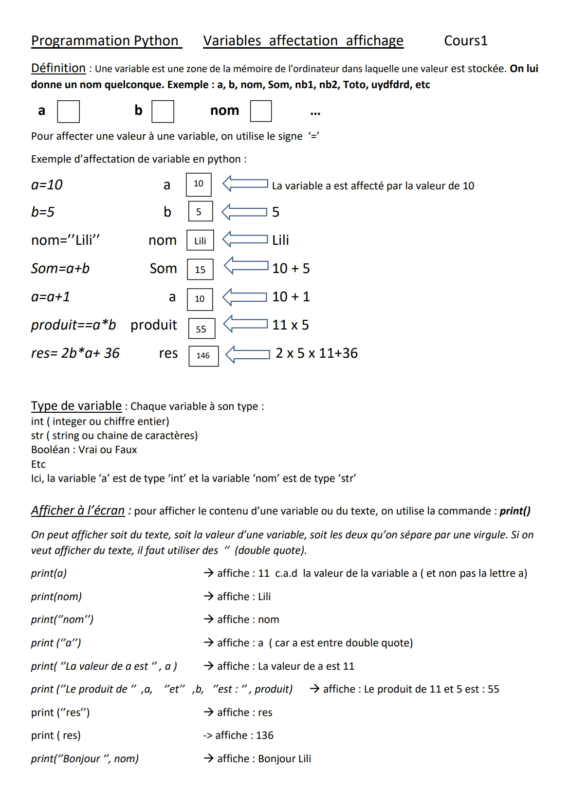
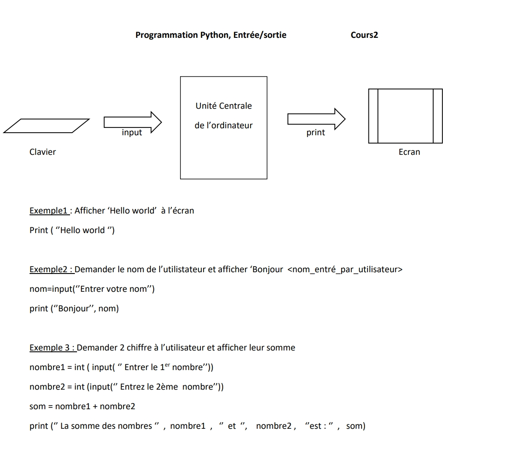
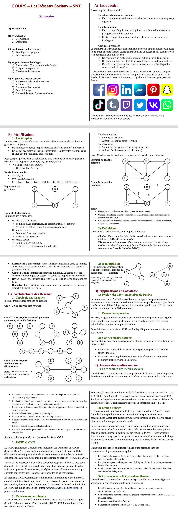

Ce site présente les chapitres étudiés en SNT en classe de seconde. Voici les différents chapitres que nous allons aborder :



Données structurées : COURS 1
Définitions :
Donnée : Information traité par un ordinateur. Élément se rapportant à un objet, une personne ou un événement
Donnée personnelle : donnée identifiant directement (nom, prénom, photo...) ou indirectement (empreinte digitale,
ADN, géolocalisation...) une personne physique.
Métadonnée : donnée particulière qui apporte des informations sur la donnée principale.
Types de Données :
Données Non Structurées
Pas d'organisation prédéfinie. Elles peuvent être traitées, interprétées par un humain.
Exemples : texte brut, images, vidéos.
Données Structurées
Définition :
-Données organisées dans un modèle prédéfini.
-Facilitent la manipulation et l'analyse.
Outils de structuration de données :
o Bases de Données : SGBDR (Système de Gestion de Base de Données Relationnelles)
▪ Tables avec des lignes et des colonnes et des liens entre elles
▪ Exemples : MySQL, SQLite, Oracle, Access
o Tableaux
▪ Structures de données en lignes et colonnes.
▪ Utilisés pour stocker des informations.
▪ Exemple : Microsoft Excel,
o Fichiers au formats spécifiques
▪ Format .CSV
▪ Format .XML
▪ Format .JSON
SGBDR
A. Concepts de Base
• Tables
• Structures principales pour stocker des données.
• Colonnes (champs, attribues) définissent le type d'information. Lignes (enregistrement, objet) représentent des enregistrements spécifiques.
B. Langage SQL
• Structured Query Language
• Langage Utilisé pour interagir avec les bases de données relationnelles.
• Requêtes SQL : interrogation des données avec le langage SQL
• Principales opérations : SELECT, INSERT, UPDATE, DELETE.
• Opérations d’analyse de données : WHERE, GROUP BY, HAVING.
Études de Cas
• Exemples concrets d'utilisation de données structurées avec un SGBDR
Données_structurées_Fiche1_Tables_Questions_Payes
Données structurées_Fiche1_instructions SQ
Données structurées : COURS 2


Voici une vidéo explicatif de ce chapitre : clique ici
Voici une vidéo explicatif de ce chapitre : clique ici
Voici une vidéo explicatif de ce chapitre : clique ici
Voici une vidéo explicatif de ce chapitre : clique ici
Voici une vidéo explicatif de ce chapitre : clique ici
Pour en savoir plus sur les chapitres de SNT, vous pouvez consulter ce site : clique ici.
Fait par Méline Lay